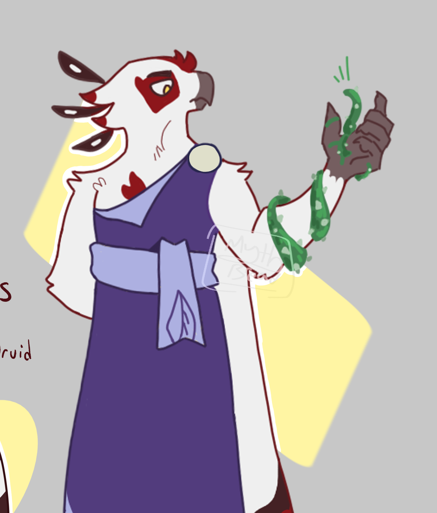
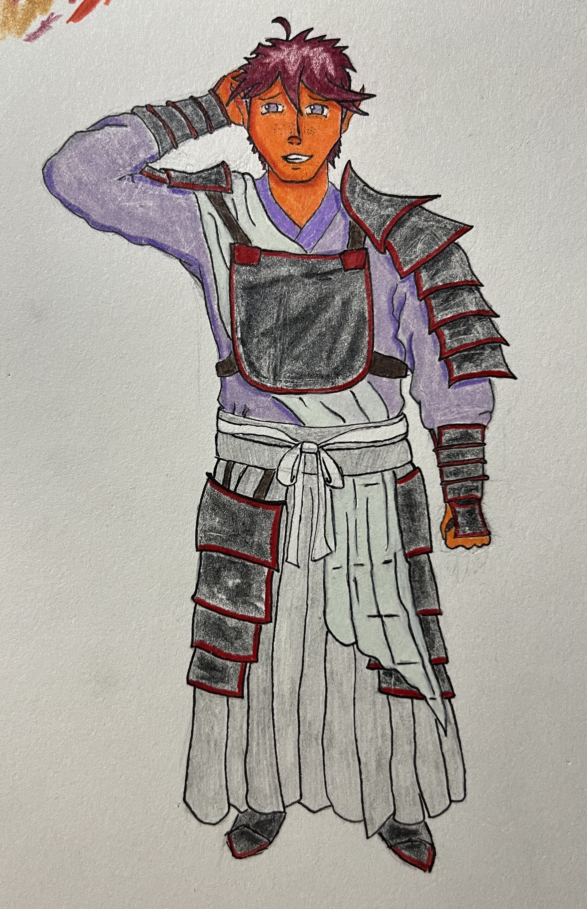
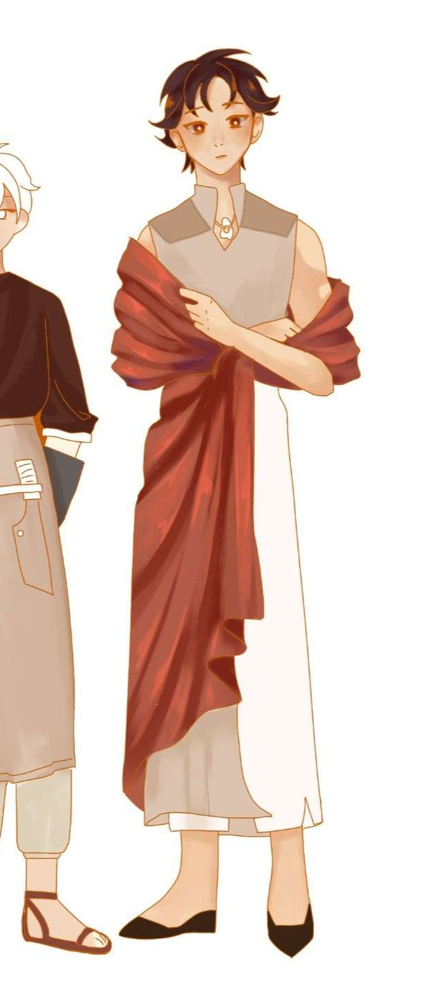
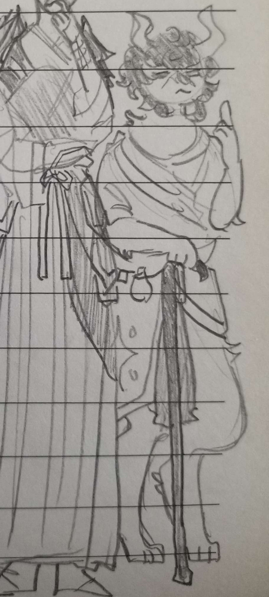

The world of Mehr An-Ki is inherently magical, but not everyone can wield that power. Being a magic user, a gnostic, is a great honor in the city of Javan, but everyone has their own opinion on being chosen by the gods to execute their will. Miel, Ren, and Sunder have just graduated from the continent's most prestigious school of magic and have been given their first quest, whether or not they’re ready for it. On the other hand, since moving to Javan all those years ago, Penelope has given up adventuring to raise her children and start a new life for herself. And now that they’re all grown up and she’s had nothing to do but work her boring office job, she’s been chosen to mentor the young graduates as they navigate new and dangerous territory. What perils await the party at the prophesied Iron Mantle Mountain? Who might they meet, who might they run from? How will they change and grow, if they do at all? The only way to know is to get there, and that’s assuming they manage to get off Penelope’s damned porch.
Sunder Briarris, Aarakocra Druid

Sunder wants nothing to do with any of this. He was perfectly content to live his life with his parents in their hill-side home helping with the family vineyard and wine business. But, of course, life rarely works that way, and at 15 Sunder discovered he was a gnostic. For the 3 years after, he slumped his way through Javan’s academy for magic users, not very enthused about the future set out for him. He had plans to hole up back home once graduated, but the gods have a different plan for him. Now, he travels with his party to see the completion of a life-or-death prophecy far, far away from his comfort zone. And if all that wasn’t bad enough, Sunder recently began having this horrible sense in the pit of his being, as if his own magic were rejecting its host somehow…
Ren Ijiro, Eladrin Cleric

Courage, selflessness, and kindness- all traits Ren wishes to embody like the heroes of his favorite stories. As the cleric of the group, Ren walks through life with his heart leading, always the first to reach out a hand and offer a listening ear. Despite the tragedy that befell his family in recent years involving a horrible twist of fate and magic, he makes the continuous, conscious choice to show warmth first and use his power for good, always. When his goddess offers him a vision of destruction and fear, he quickly takes on the quest to right the wrongs and stop the horror that approaches. But what awaits them in Feohtan and the cursed mountains beyond? Only time will tell, and he prays for his goddess to give him the strength to keep going, even after Sunder’s dragged his feet enough to gouge lines in the soil, Miel’s umpteenth side-eye, and Aunt Penelope’s concerning retelling of that time she nearly killed a guy… This is going to be a very long journey.
Miel Ellinaught, Dhampir Wizard

Miel wants to travel the world, so it’s a good thing he’s only half vampire. Ironically not the most studious wizard, he enjoys spending his time with his best friend April and utilizing the fact he doesn’t need to sleep to poke around the woods at night. When he’s summoned by his grandparents for a visit long overdue, Miel leaps at the opportunity to get away from Javan. But, wait, why does his mother insist he take the mom of his friend he doesn’t even like that much with him? And why is his classmate telling him he’s part of this serious prophecy? Gods above, maybe he can convince that introverted bird guy to come along so he’s not so miserable.
Penelope Cynara-Carver, Satyr Ranger

Penelope is a retired adventurer. At least, that’s what she keeps telling herself. She’s lived a long and full life, traveling the world and spreading her songs and stories, before settling and having a family all grown up now. She’s old, out of practice, and not as sharp as she used to be. So it comes as quite a surprise when she’s chosen to accompany a group of recently graduated boys on their magical hero quest. It’s not all bad, at least. She’s known Ren since he was little, she made sure Sunder didn’t walk into a fey circle when he explored the woods alone as a kid, and Miel was friends with her sons. But surely this is their adventure, not hers? What help could an old satyr offer? While the questions get more and more nuanced as the days pass, Penelope guides the boys through their first official adventure, offering sage advice from her infinite well of wisdom, like how to lie through your teeth and pretend you’re okay when you’re really, really not.